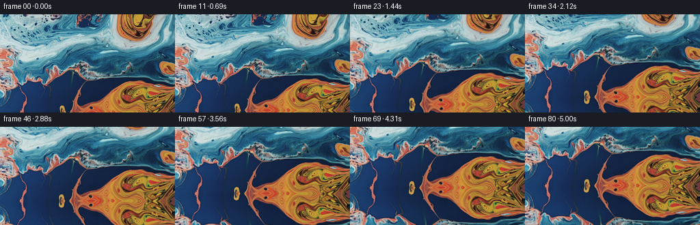
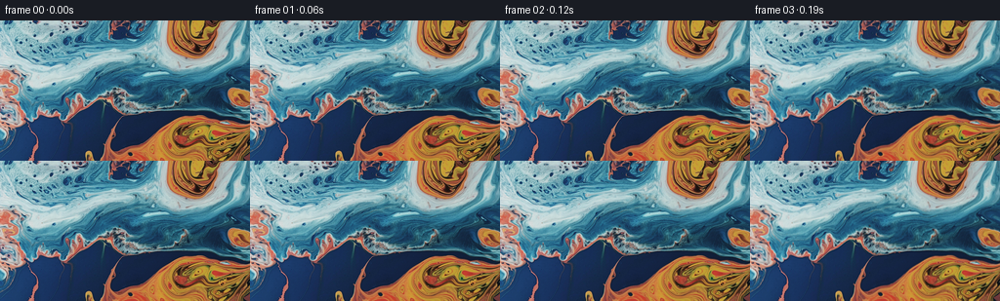

CODING AGENTS AS PIXEL WORLD MODELS
traex/GPT-5.6-Sol · 0004_s4
点击播放 · 原生 RGB 像素
逐轮保存的候选
回放视频、检查图与代码变化。
每份候选均可单独播放。实际图片检查记录在下方工具轨迹中。
候选 01播放与检查图
点击播放 · 原生 RGB 像素


展开代码变化
--- 上一保存版本
+++ 本次保存版本
@@ -0,0 +1,92 @@
+from pathlib import Path
+import json
+import numpy as np
+import cv2
+from PIL import Image
+import artifact_io
+
+
+def smoothstep(x):
+ return x * x * (3.0 - 2.0 * x)
+
+
+def build_world(first, extra=86):
+ """Continue the macro liquid texture below the photograph by folding and
+ gently shearing its lower portion. The folded source preserves the exact
+ palette, grain and specular texture of the supplied liquid image."""
+ h, w = first.shape[:2]
+ world = np.empty((h + extra, w, 3), np.uint8)
+ world[:h] = first
+
+ yy, xx = np.mgrid[0:extra, 0:w].astype(np.float32)
+ d = yy + 1.0
+ # A long triangular fold of the lower 62 pixels. It is continuous at the
+ # first-frame edge and avoids introducing an unrelated synthetic texture.
+ period = 122.0
+ tri = np.abs((np.mod(d, period)) - 61.0)
+ src_y = (h - 1.0) - (61.0 - tri)
+ # Flowing horizontal shear that grows away from the known image boundary.
+ shear = (0.12 * d * np.sin(xx / 31.0 + d / 29.0)
+ + 0.045 * d * np.sin(xx / 9.5 - d / 17.0)
+ - 0.035 * d)
+ src_x = xx + shear
+ continuation = cv2.remap(first, src_x.astype(np.float32), src_y.astype(np.float32),
+ interpolation=cv2.INTER_CUBIC,
+ borderMode=cv2.BORDER_REFLECT_101)
+
+ # Very mild depth shading, characteristic of translucent liquid. Keep the
+ # seam exactly controlled by fading this effect in from zero.
+ shade = 1.0 - 0.025 * np.clip(d / extra, 0, 1)
+ continuation = np.clip(continuation.astype(np.float32) * shade[..., None], 0, 255).astype(np.uint8)
+ world[h:] = continuation
+ return world
+
+
+def generate(case_dir):
+ case_dir = Path(case_dir)
+ spec = json.loads((case_dir / 'task_spec.json').read_text())
+ n, h, w = spec['frames'], spec['height'], spec['width']
+ first = np.asarray(Image.open(case_dir / 'first_frame.png').convert('RGB'), dtype=np.uint8)
+ assert first.shape == (h, w, 3)
+
+ world = build_world(first, extra=90)
+ wh = world.shape[0]
+ gy, gx = np.mgrid[0:h, 0:w].astype(np.float32)
+ frames = np.empty((n, h, w, 3), dtype=np.uint8)
+ frames[0] = first # contract: byte/pixel exact
+
+ duration = (n - 1) / float(spec['fps'])
+ for i in range(1, n):
+ p = i / (n - 1.0)
+ seconds = i / float(spec['fps'])
+
+ # A deliberate downward camera tilt: the liquid sheet travels upward
+ # through the image. Ease at both ends while covering a visible 57 px.
+ camera_y = 57.0 * smoothstep(p)
+
+ # Sub-pixel coherent advection keeps the material alive rather than
+ # behaving like a rigid photograph. Each term is differenced against
+ # time zero, so motion begins continuously from the supplied frame.
+ ramp = smoothstep(min(1.0, seconds / 0.9))
+ phase = 2.0 * np.pi * seconds / duration
+ dx = ramp * (
+ 0.95 * (np.sin(gy / 20.0 + 0.30 * phase) - np.sin(gy / 20.0)) +
+ 0.42 * (np.sin(gx / 35.0 - 0.20 * phase) - np.sin(gx / 35.0))
+ )
+ dy = ramp * (
+ 0.38 * (np.sin(gx / 27.0 + 0.24 * phase) - np.sin(gx / 27.0)) +
+ 0.22 * (np.sin((gx + gy) / 48.0 - 0.18 * phase) - np.sin((gx + gy) / 48.0))
+ )
+
+ map_x = gx + dx.astype(np.float32)
+ map_y = gy + camera_y + dy.astype(np.float32)
+ frame = cv2.remap(world, map_x, map_y, interpolation=cv2.INTER_CUBIC,
+ borderMode=cv2.BORDER_REFLECT_101)
+ frames[i] = np.clip(frame, 0, 255).astype(np.uint8)
+
+ artifact_io.save(frames, case_dir)
+ return frames
+
+
+if __name__ == '__main__':
+ generate(Path(__file__).resolve().parent)
可观测工具轨迹
实际执行的命令与返回图片。
命令 1exit 0
/bin/bash -lc "cat GENERATION_RULES.md && printf '\\n---PROMPT---\\n' && cat prompt.txt"
命令 2exit 127
/bin/bash -lc "find . -maxdepth 2 -type f -printf '%p\\n' | sort && printf '\\n--- image ---\\n' && file first_frame.png"
命令 3exit 0
/bin/bash -lc "cat task_spec.json; sed -n '1,240p' artifact_io.py"
命令 4exit 0
/bin/bash -lc "python - <<'PY'
from PIL import Image
import numpy as np
im=np.array(Image.open('first_frame.png').convert('RGB'))
print(im.shape, im.dtype, im.min(), im.max())
print('mean/std', im.mean((0,1)), im.std((0,1)))
# coarse 16x9 mean color grid
for y in range(0,144,16):
print('row',y, ['%02x%02x%02x'%tuple(im[y:y+16,x:x+16].mean((0,1)).astype(int)) for x in range(0,256,16)])
# dominant quantized bins
q=(im//32).reshape(-1,3)
u,c=np.unique(q,axis=0,return_counts=True)
for i in np.argsort(c)[-20:][::-1]: print(c[i], u[i]*32)
PY"命令 5exit 0
/bin/bash -lc "python - <<'PY'
from PIL import Image
import numpy as np, colorsys
im=np.array(Image.open('first_frame.png').convert('RGB').resize((64,36)))
# chars blue B cyan C light ., orange O brown o dark # neutral n
for row in im:
s=''
for r,g,b in row:
mx=max(r,g,b); mn=min(r,g,b)
if mx<45: c='#'
elif mx-mn<18: c='n' if mx<130 else '.'
elif b>r*1.18 and b>g*1.05: c='B'
elif (b>r*1.05 and g>r*1.15): c='C'
elif r>b*1.28 and r>g*1.08: c='O'
elif r>b*1.12: c='o'
else: c='~'
s+=c
print(s)
PY"命令 6exit 0
/bin/bash -lc "python - <<'PY'
try:
import cv2; print('cv2',cv2.__version__)
except Exception as e: print('no cv2',e)
try:
import scipy; print('scipy',scipy.__version__)
except Exception as e: print('no scipy',e)
PY"命令 7exit 0
/bin/bash -lc "cat > generate.py <<'PY'
from pathlib import Path
import json
import numpy as np
import cv2
from PIL import Image
import artifact_io
def smoothstep(x):
return x * x * (3.0 - 2.0 * x)
def build_world(first, extra=86):
\"\"\"Continue the macro liquid texture below the photograph by folding and
gently shearing its lower portion. The folded source preserves the exact
palette, grain and specular texture of the supplied liquid image.\"\"\"
h, w = first.shape[:2]
world = np.empty((h + extra, w, 3), np.uint8)
world[:h] = first
yy, xx = np.mgrid[0:extra, 0:w].astype(np.float32)
d = yy + 1.0
# A long triangular fold of the lower 62 pixels. It is continuous at the
# first-frame edge and avoids introducing an unrelated synthetic texture.
period = 122.0
tri = np.abs((np.mod(d, period)) - 61.0)
src_y = (h - 1.0) - (61.0 - tri)
# Flowing horizontal shear that grows away from the known image boundary.
shear = (0.12 * d * np.sin(xx / 31.0 + d / 29.0)
+ 0.045 * d * np.sin(xx / 9.5 - d / 17.0)
- 0.035 * d)
src_x = xx + shear
continuation = cv2.remap(first, src_x.astype(np.float32), src_y.astype(np.float32),
interpolation=cv2.INTER_CUBIC,
borderMode=cv2.BORDER_REFLECT_101)
# Very mild depth shading, characteristic of translucent liquid. Keep the
# seam exactly controlled by fading this effect in from zero.
shade = 1.0 - 0.025 * np.clip(d / extra, 0, 1)
continuation = np.clip(continuation.astype(np.float32) * shade[..., None], 0, 255).astype(np.uint8)
world[h:] = continuation
return world
def generate(case_dir):
case_dir = Path(case_dir)
spec = json.loads((case_dir / 'task_spec.json').read_text())
n, h, w = spec['frames'], spec['height'], spec['width']
first = np.asarray(Image.open(case_dir / 'first_frame.png').convert('RGB'), dtype=np.uint8)
assert first.shape == (h, w, 3)
world = build_world(first, extra=90)
wh = world.shape[0]
gy, gx = np.mgrid[0:h, 0:w].astype(np.float32)
frames = np.empty((n, h, w, 3), dtype=np.uint8)
frames[0] = first # contract: byte/pixel exact
duration = (n - 1) / float(spec['fps'])
for i in range(1, n):
p = i / (n - 1.0)
seconds = i / float(spec['fps'])
# A deliberate downward camera tilt: the liquid sheet travels upward
# through the image. Ease at both ends while covering a visible 57 px.
camera_y = 57.0 * smoothstep(p)
# Sub-pixel coherent advection keeps the material alive rather than
# behaving like a rigid photograph. Each term is differenced against
# time zero, so motion begins continuously from the supplied frame.
ramp = smoothstep(min(1.0, seconds / 0.9))
phase = 2.0 * np.pi * seconds / duration
dx = ramp * (
0.95 * (np.sin(gy / 20.0 + 0.30 * phase) - np.sin(gy / 20.0)) +
0.42 * (np.sin(gx / 35.0 - 0.20 * phase) - np.sin(gx / 35.0))
)
dy = ramp * (
0.38 * (np.sin(gx / 27.0 + 0.24 * phase) - np.sin(gx / 27.0)) +
0.22 * (np.sin((gx + gy) / 48.0 - 0.18 * phase) - np.sin((gx + gy) / 48.0))
)
map_x = gx + dx.astype(np.float32)
map_y = gy + camera_y + dy.astype(np.float32)
frame = cv2.remap(world, map_x, map_y, interpolation=cv2.INTER_CUBIC,
borderMode=cv2.BORDER_REFLECT_101)
frames[i] = np.clip(frame, 0, 255).astype(np.uint8)
artifact_io.save(frames, case_dir)
return frames
if __name__ == '__main__':
generate(Path(__file__).resolve().parent)
PY
python generate.py
python - <<'PY'
from PIL import Image
import numpy as np
f=np.array(Image.open('first_frame.png').convert('RGB'))
z=np.load('pixels.npz')['pixels']
r=((z[:,:,0]>>16)&255).astype(np.uint8);g=((z[:,:,0]>>8)&255).astype(np.uint8);b=(z[:,:,0]&255).astype(np.uint8)
out=np.dstack([r,g,b])
print('first exact:',np.array_equal(f,out),'maxdiff',np.abs(f.astype(int)-out.astype(int)).max())
print('archive',z.shape,z.dtype,'inspection exists')
# temporal stats from saved pngs
ims=[np.array(Image.open(f'frames/{i:02d}.png')) for i in range(81)]
d=[np.mean(np.abs(ims[i].astype(np.int16)-ims[i-1].astype(np.int16))) for i in range(1,81)]
print('adjacent MAE min/mean/max',min(d),sum(d)/len(d),max(d))
print('end mean/std',ims[-1].mean((0,1)),ims[-1].std((0,1)))
PY"命令 8exit 0
/bin/bash -lc "python - <<'PY'
from PIL import Image
import numpy as np
ims=[np.asarray(Image.open(f'frames/{i:02d}.png')).astype(float) for i in [0,10,20,30,40,50,60,70,80]]
for i,a in zip([0,10,20,30,40,50,60,70,80],ims):
# vertical neighboring-row abs diff around entered seam position 143-camera_y approximately
rd=np.abs(np.diff(a,axis=0)).mean((1,2))
k=np.argmax(rd)
print(i,'mean',a.mean((0,1)).round(1),'max rowgrad',k,round(rd[k],2),'avg',round(rd.mean(),2),'bottom',a[-8:].mean((0,1)).round(1))
PY"保存候选 1 份；完成命令 8 次；可验证图片返回 0 张。原始 API 响应与完整日志保留在本地。